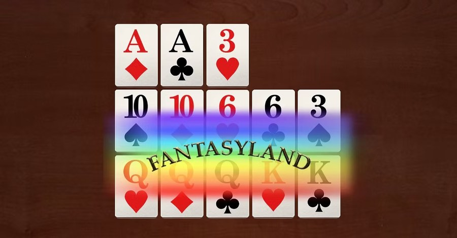
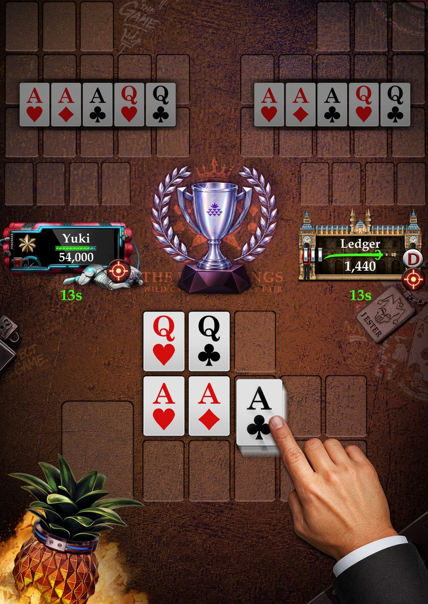
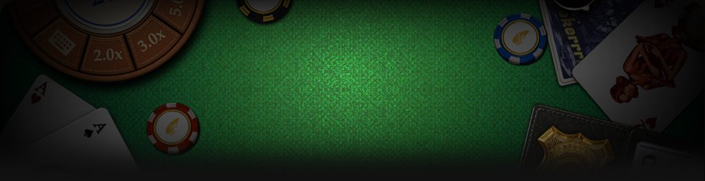
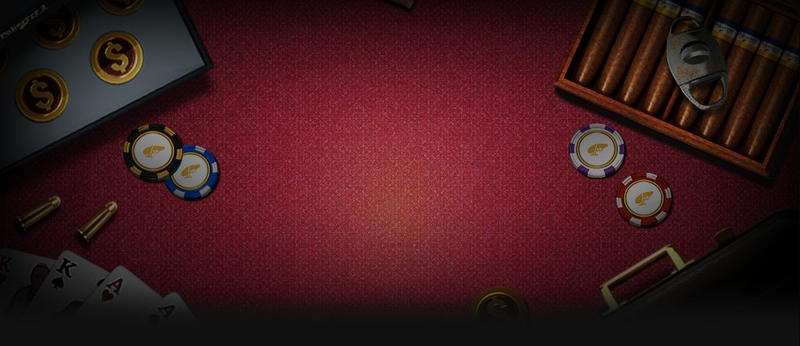
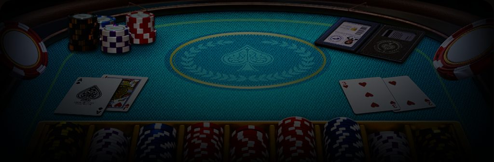
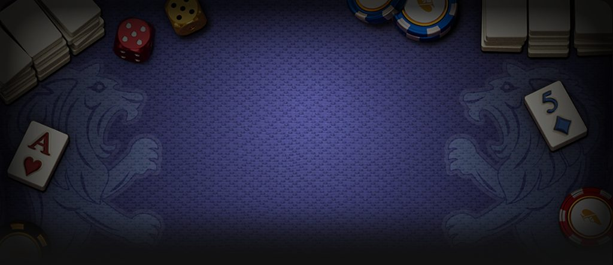
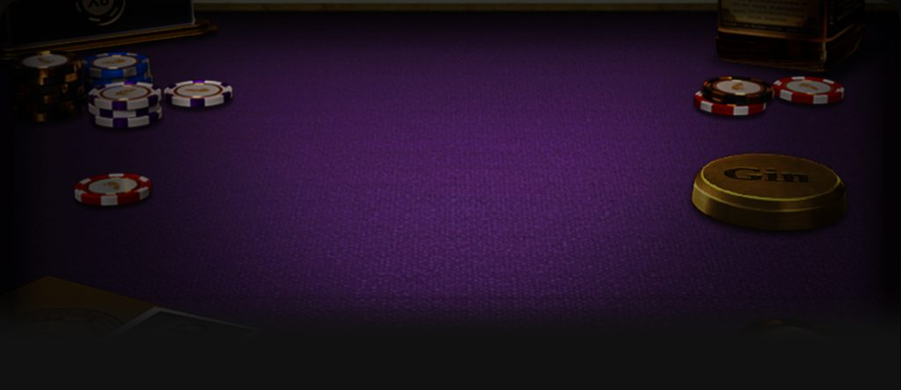

OFC Mission Briefing
From the very first card, every placement can change the outcome. Ready for deployment? HQ is waiting for your first operation.
OFC Ops Protocol
Each player is dealt 13 cards and arranges them into three rows: the front row (3 cards), middle row (5 cards), and back row (5 cards). The goal is to make a "qualified" hand: back-row strength ≥ middle-row strength ≥ front-row strength. Get the order wrong and it's a foul — you lose the whole hand.
Cards come in a 5-then-3 rhythm: the first turn deals 5 cards, all of which go on the board; four more turns follow, each dealing 3 cards — you use 2 and discard 1. Once a card is placed and the turn is complete, it can't be moved to a different row, so every choice counts.
-
① Receive Cards // Deploy in Waves
The first turn deals 5 cards — all go on the board. Four more turns follow, 3 cards each: use 2, discard 1. Once placed, a card can't move to another row, so every choice counts.
-
② Arrange Rows // Pass Inspection
Your back row must rank ≥ your middle row ≥ your front row. Get the order wrong and it's a foul — you lose all three rows and score nothing.
-
③ Execute Showdown // Settle the Score
Once all three rows are set, compare them against your opponent's row by row. Win a row, score a point; sweep all three and earn a +3 Scoop bonus.
Work through a real example hand, round by round — click or drag to place cards, then hit "Confirm" to see whether you've fouled.
How Are Results Scored?
After each hand, your three rows are compared against your opponent's: win a row and score a point, sweep all three for a +3 Scoop bonus. A fouled hand loses all three rows and scores nothing. Strong hands in the middle and back rows also earn bonus royalty points — the stronger the hand, the bigger the bonus, as shown in the table below.
The front row earns royalties too, starting with a pair of sixes: +1 for 66, up to +9 for AA. Trip up (222–AAA) on the front row and bonuses jump from +10 to +22.
| Hand | Back Row | Middle Row |
|---|---|---|
| Three of a Kind | +0 | +2 |
| Straight | +2 | +4 |
| Flush | +4 | +8 |
| Full House | +6 | +12 |
| Four of a Kind | +10 | +20 |
| Straight Flush | +15 | +30 |
| Royal Flush | +25 | +50 |
Fantasyland // Classified Ops
Make a qualifying hand with a pair of Queens or better on the front row (without fouling), and you'll enter Fantasyland on your next hand.
The first time you enter, you can get up to 17 cards at once and set all three rows in one go — no turn-by-turn decisions. Your cards stay face down until every other player finishes their hand.
Enter Fantasyland again in a row (re-fantasy) and you'll only get 14 cards. To stay in Fantasyland, make quads or better on the back row, or three of a kind on the front row.
While any player is in Fantasyland, the dealer position freezes, and no one can leave the table until every player has left Fantasyland.

OFC SNG // Same Cards, Real Skill
OFC SNG seats exactly 3 players, and everyone is dealt the exact same cards each hand — with placements kept hidden from each other until showdown. Take luck out of the equation, and all that's left is placement skill and judgment.
Everyone starts with 300 chips. Blinds start at 10 and go up every hand: 10 → 20 → 40 → 60 → 90 → 120 → 200 → 300 → 900.
Run out of chips and you're eliminated — games run up to 30 hands.
OSR points are awarded by final ranking: the top three players earn +5, -1, and -3 OSR. Special cases apply too — if two players are eliminated at once, each loses 2 OSR; if two players remain after 30 hands with no winner, each gains 1 OSR; if all three remain, no OSR changes hands.

More Missions Await
The app also includes No Limit Hold'em, PLO, 7 Card Stud, Blackjack, Rummy and Gin Rummy, plus advanced OFC variants like Pineapple OFC, OFC Joker and OFC SNG and the "Agent Missions" system — all ready to explore after download. Tap a card below for the full rules of any one game.

Pre-flop, flop, turn, river — four rounds of betting to make the best five-card hand.
View Game Rules
Four hole cards to start; use exactly 2 hole cards + 3 community cards, with bets capped at the pot size.
View Game RulesNo community cards — make your best five from seven, with position shifting by exposed strength.
View Game Rules
Beat the dealer's hand without going over 21 — with insurance, double down, and split along the way.
View Game Rules
Draw, meld, and empty your hand first to win.
View Game Rules
Head-to-head play where lower Deadwood wins — Knock or Gin at the right moment.
View Game Rules